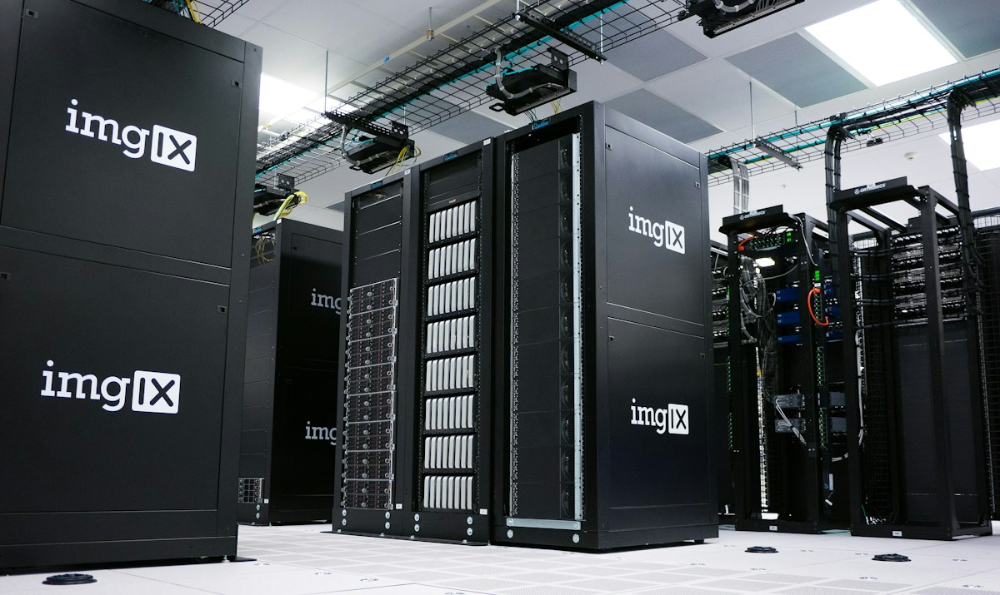
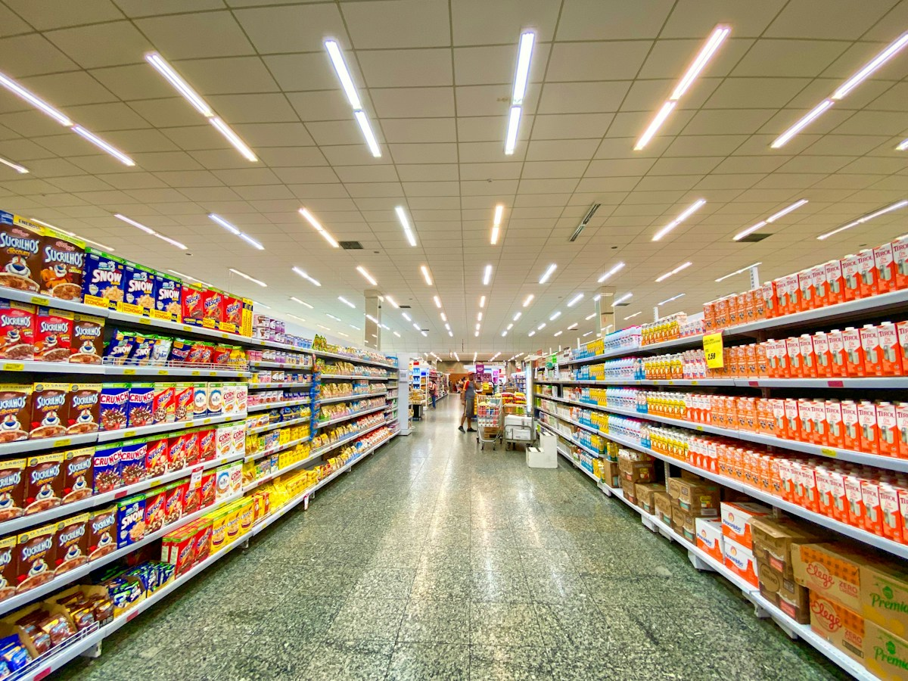

DATA ENGINEERING1Telecom Data Warehouse
ETL / SSISFrom incoming transaction files to clean, traceable records. An ETL workflow with validation, subscriber mapping, and rejected-record handling.
Data Engineer / Curious by nature.
I turn scattered data into structured, usable information through Python, SQL, and thoughtful data workflows.
1 / SELECTED WORK
Four projects. Different data challenges. A practical approach to each one.

DATA ENGINEERING1From incoming transaction files to clean, traceable records. An ETL workflow with validation, subscriber mapping, and rejected-record handling.
Job listings, without the manual collection. A configurable scraper that brings roles, companies, and requirements into one structured dataset.
Ask a question in plain language. Explore a prototype that uses Gemini and a database schema to generate SQL and display query results.

DATA ANALYSIS4Making sense of everyday transactions. Data cleaning and exploratory analysis to answer questions about revenue, products, and customer satisfaction.
Built as learning projects. Explore the code, approach, and documentation on GitHub. Photography is illustrative.
2 / A LITTLE ABOUT ME
I’m a Computer and Communication Engineering undergraduate at Alexandria University, building my path in Data Engineering.
I enjoy the part where messy information starts to make sense: cleaning a dataset, connecting sources, or designing a workflow that makes data easier to use.
Through the Digital Egypt Pioneers Initiative (DEPI), I’m developing practical skills in SQL, databases, ETL, and data processing. I bring a foundation in Python and Java, an analytical mindset, and a collaborative approach to learning and problem-solving.
3 / MY TOOLKIT
A growing technical foundation, put into practice through projects.
The foundation for processing data and automating repetitive tasks.
From working with datasets to connecting web interfaces and databases.
Structuring, querying, and understanding how information is stored.
Building practical workflows from raw sources to structured storage.
Preparing information to answer questions and communicate findings.
Problem-solving, analytical thinking, and teamwork are part of every project.
Follow my progress4 / THE JOURNEY SO FAR
Building a strong foundation through university study and hands-on technical training.
View full résuméDigital Egypt Pioneers Initiative (DEPI)
Practical training across the data engineering lifecycle, from preparation and transformation to structured storage.
Alexandria University
Bachelor’s degree · Undergraduate
Developing a foundation in programming,
engineering, and analytical problem-solving.
5 / LET’S COLLABORATE
Open to focused freelance tasks, internships, and junior opportunities.
Organize CSV datasets, check missing values, fix types, and prepare data for useful analysis with Python and Pandas.
See related workStructure publicly available web information and automate repetitive collection tasks using Python and Selenium.
See related workSupport scoped SQL and ETL tasks: validate incoming files, transform records, and load them into structured storage.
See related workHAVE A PROJECT OR AN OPPORTUNITY?
Tell me what you’re working on. I’d love to explore how I can contribute.